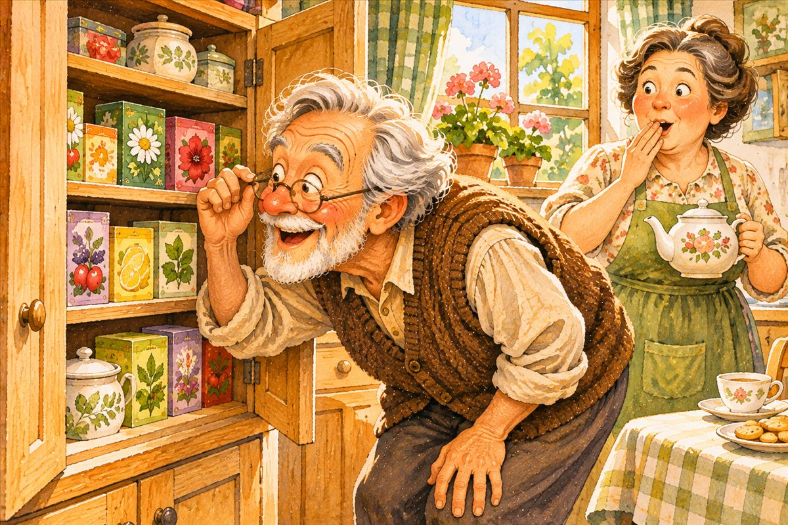
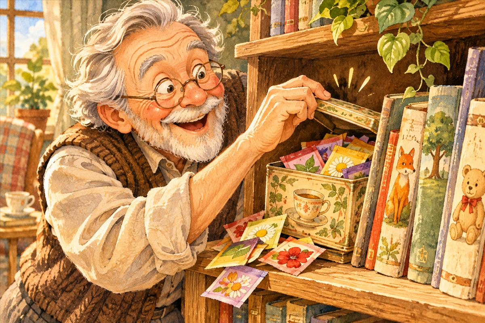
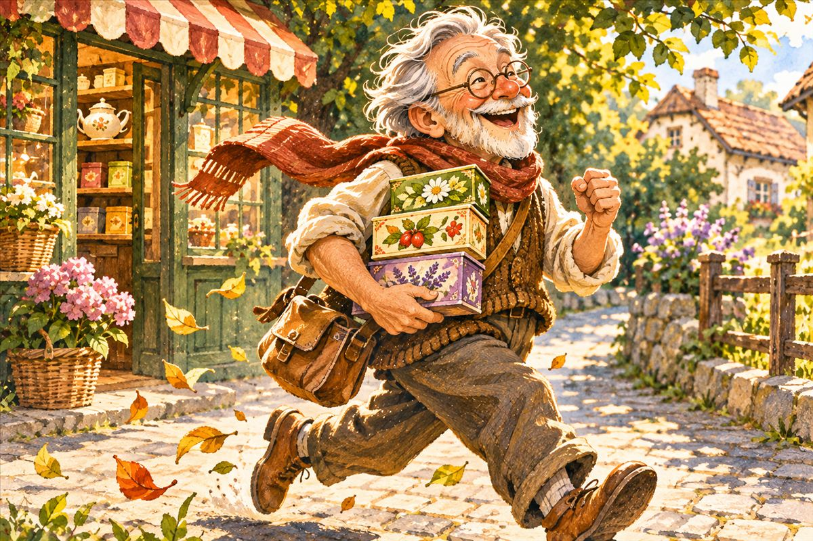
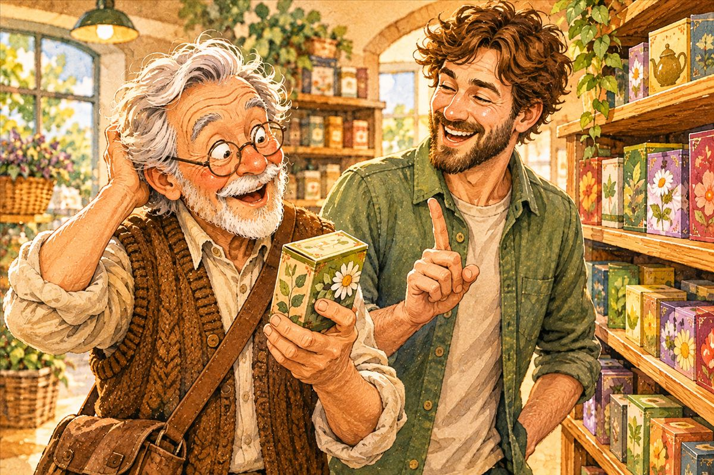

Od 137 k 200
Svoju zbierku som mal dlho len pre seba. Potom prišla jedna výstavka, jedna pani učiteľka a tri vrecúška, ktoré chýbali do dvesto.
Výstavka
Na stretnutí dôchodcov som raz vystavil svoju zbierku obalov z čajových vrecúšok. Na tabuľke pri nej stálo: 137 kusov. Bola tam aj jedna pani učiteľka – zbierku si prezrela a sľúbila mi, že mi nejaké vrecúška prinesie.
Tri mesiace pátrania
Ten sľub ma chytil. Kamkoľvek som prišiel k niekomu trochu známemu, hneď som mu poprezeral, aké má doma čaje.

A raz som za detskými knihami našiel zastrčenú krabičku. Boli v nej obaly, ktoré som kedysi odložil a nikdy nezaradil do zbierky – akoby som ich objavil znova.

Dar od pani učiteľky
Asi po troch mesiacoch prišla pani učiteľka s darom: 87 vrecúšok z 34 firiem. Niektoré sa opakovali a mnohé som už mal – ale 18 z nich bolo pre moju zbierku úplne nových.
A ešte niečo ma potešilo: pani učiteľka predpokladala, že bežné čaje už mám, a tak si cez internet objednala aj zopár detských čajov. Naozaj sa snažila.
Tri vrecúška do dvesto
Keď som všetko spočítal, vyšlo mi 197. Chýbali tri do dvesto – a to bolo ako injekcia. Hneď som bežal do obchodu a kúpil zopár krabičiek čaju. Doma sme potom mali dlho čo piť.

Prečo vznikla táto stránka
Číslo 200 bolo také magické, že som si vrecúška začal fotiť. Nechcel som, aby mi syn na návšteve povedal: „Neber to, veď si to bral minule.“ Lebo aj to sa mi stalo – chcel som zbierku schválne obohatiť a kúpil som čaj, ktorý som už mal.

Tak vznikol nápad urobiť o zbierke stránku. Najprv len preto, aby kamaráti a príbuzní vedeli, čo už mám, a mohli mi odkladať to, čo chýba. Nápad však v mojich myšlienkach rástol – najmä keď mi umelá inteligencia naznačila, že mi s tým pomôže. A tak dnes čítate tieto riadky.
Príbeh rozprával autor zbierky, spísal ho Claude, spolutvorca stránky.